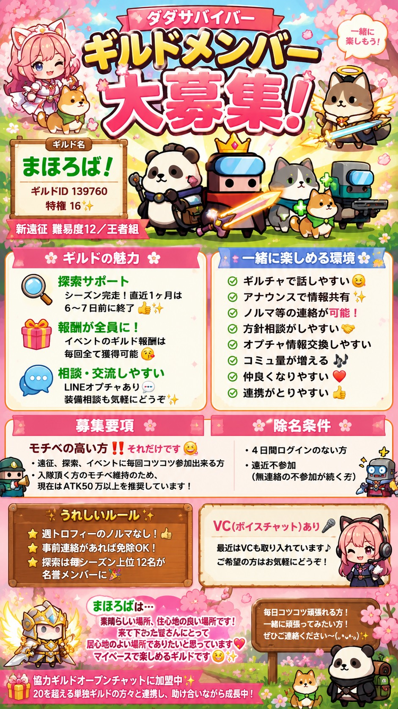
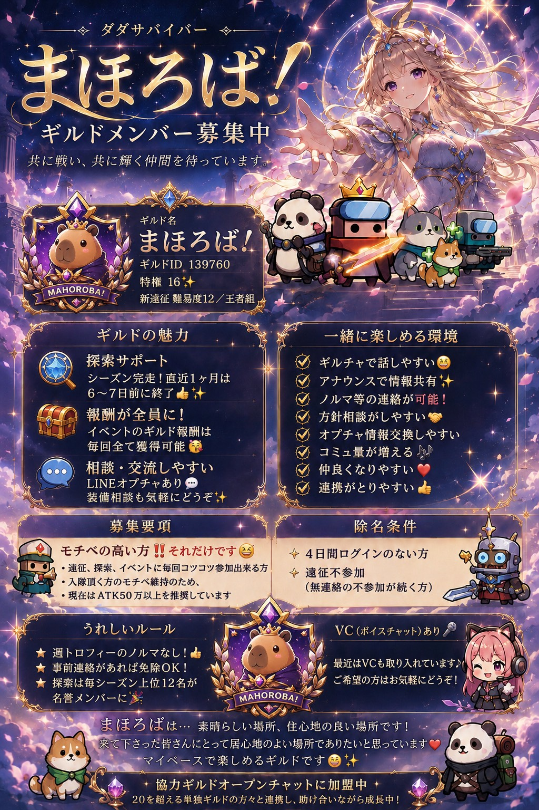
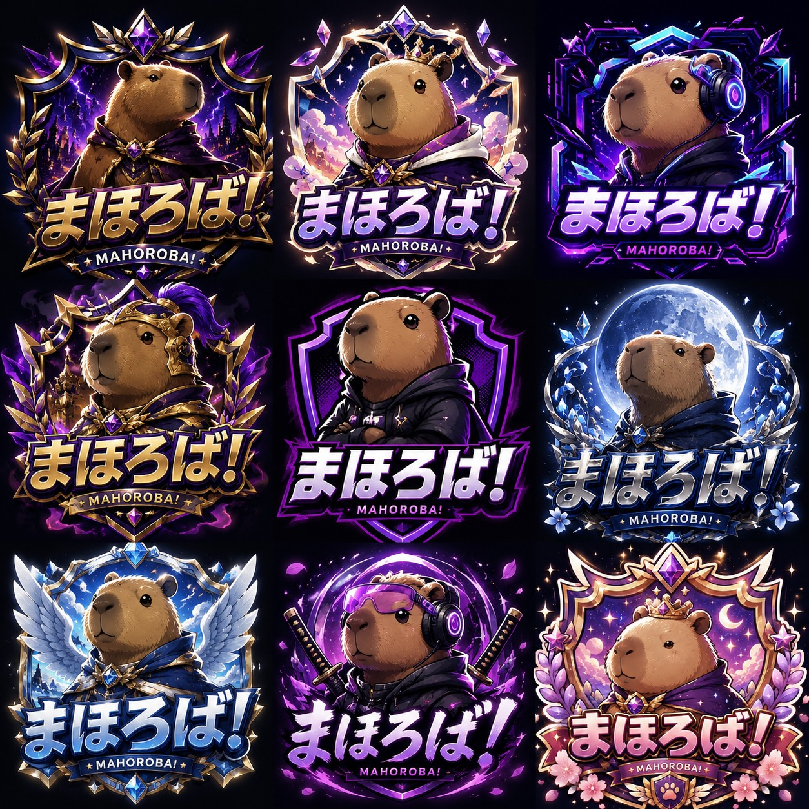
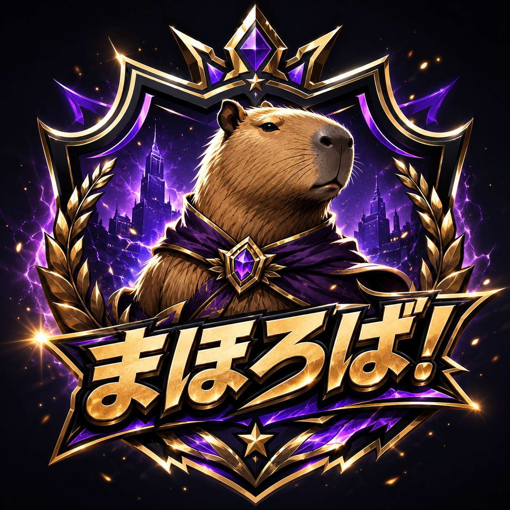
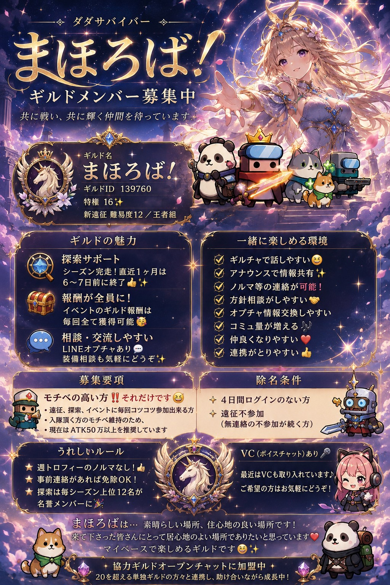
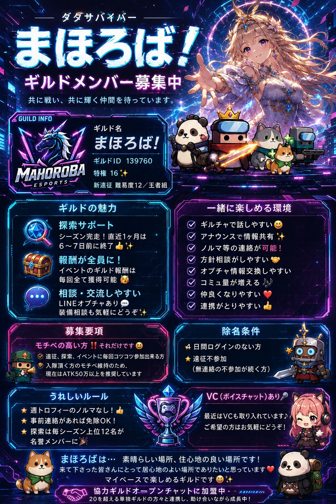
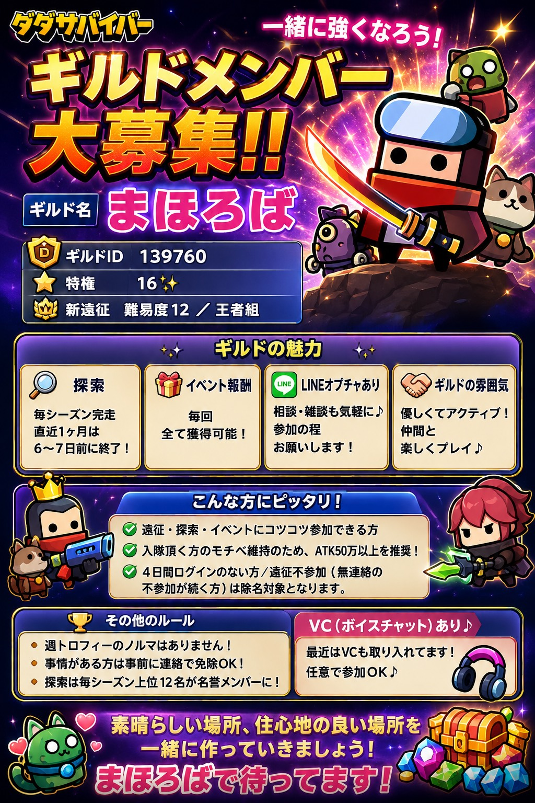
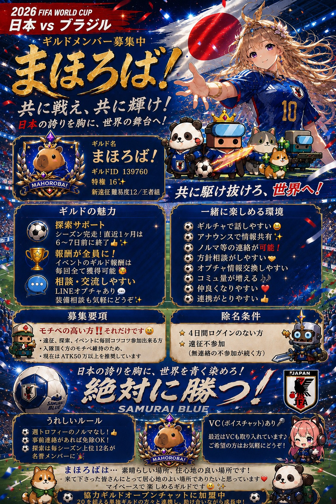

About Us
ギルド紹介
ようこそ！まほろば！へ🌸
当ギルドは、ダダサバイバーを
愛するプレイヤーが集まるギルドです💐
「まほろば」とは古の言葉で、
「素晴らしい場所・住心地の良い場所」
を意味します。
このギルドが皆さんにとって居心地の良い場所になりますように🎵
どんなATK層の方でも協力し合い、
遠征・探索・イベントなどを
みんなで一緒に取り組んでいます✨
証アップやステアップなど、嬉しいことがあったらどんどん発信💕
みんなで褒め合える、そんな温かいギルドです👍
| ギルド名 | まほろば！ |
|---|---|
| ゲーム | ダダサバイバー |
| メンバー数 | 35名以上（変動あり） |
| 活動時間 | 随時 |
| 雰囲気 | 和気あいあい・初心者大歓迎 |
Features
ギルドの特色・ルール
初心者大歓迎
ゲームを始めたばかりの方も安心。
先輩メンバーが丁寧にサポートします。
攻略情報を共有
国内外の最新攻略情報をメンバー間で共有。
一緒に強くなりましょう。
和やかな雰囲気
ゲームを楽しむことを最優先に。
無理なノルマは一切なし。
🌸 まほろばの理念 大切なこと
どんなATK層の方でも協力し合い、
遠征・探索・イベントなどを
みんなで一緒に取り組みます✨
「まほろば」とは、素晴らしい場所、
住心地の良い場所という意味です🎵
このギルドが皆さんにとって
居心地の良い場所になりますように💐
💕 運営の目標・目的
- 🌷 メンバーに心地よさを提供すること
- 🌷 アクティブメンバーのモチベを保つこと
- 🌷 アクティブ率を高めるために尽力すること
- 🌷 がんばっているメンバーに不満を抱かせないこと
- 🌷 まほろばを選んでくださった方々のために尽力すること
- 🌷 ルールを守っているメンバーのモチベと納得感を保つこと
🎀 遠征・探索のお約束 大切なこと
🌸 探索について
- 直近2ヵ月の全体平均をとる（検討中）
- それにより設定値を決める（検討中）
- 5日以降で0ならアナウンス💌
- 10日以降で0ならキック
これらは厳格なルールというよりも、
「リアルの都合で忘れることもあるよね、
だから みんなで声をかけ合おう」
という気持ちで設定しています🙏
アナウンスはメンションをつけて、
どなたでも行っていただいてOKです🎵
シーズン途中でご加入の方は、
加入日の翌日から起算します
（探索の体力が回復するまで20時間かかるためです）
💕 取り組んでいただきたいこと
- 🌷 遠征参加を呼びかけ合う
- 🌷 終了2〜3時間前から開始
- 🌷 メンションをつけて呼びかけ
- 🌷 できる人ができる時に
- 🌷 ご無理、ご負担のない範囲で
これにより、遠征忘れが減り、ノルマも自然に完遂✨
「ありがとう」が増える、そんな協力体制を目指しています💐
💐 ノルマについて 大切なこと
※事前連絡にて免除あり※
- 🌷 遠征ボス・探索の参加必須
- 🌷 遠征は原則、週4回すべて
- 🌷 探索スコア1200以上の取得
簡単に言うと？🌸
💕 できるだけ毎回遠征に参加する
💕 できるだけ探索も毎日行う
💕 オプチャなどで和を大切にする
ということです🌸
🙏 みんなで気持ちよく過ごすために 大切なこと
事情によりログインやイベントに参加できない場合は、
可能な限り事前にご連絡ください💌
ご連絡いただけた場合は、期間中のノルマは免除いたします🌸
基本的には事前連絡を免除の対象としていますが、
繁忙期など、人によって事情はさまざまです🌷
そのため、場合によっては「事後」のご連絡も
免除の対象になることがあります✨
不参加の事後連絡は、理由も添えていただけると嬉しいです（例：仕事の残業、育児で寝落ち、等）。
詳細な理由があるほうが、みんなの納得感につながり、ご本人さんの心の負担も軽くなると考えています💕
まほろばが大切にしていること🌸
💐 居心地よく、長く居てほしい
💐 安心してほしい
💐 リアルも大切にしてほしい
発言内容については、周りの方に敬意を持って、不快な気持ちにさせないようご配慮をお願いします🙇
どのような年代の方がいらっしゃるか分かりませんので、全年齢に適した発言をお願いいたします👼
ギルド移籍を検討される方は、前もってご連絡いただけると、新メンバー探しに余裕が出るので助かります✨
（移籍は悪いことでは全然ないので、遠慮は無用です🌷）
📋 ご注意いただきたいこと 大切なこと
以下のような状況が続く場合、運営判断にて
ギルドを離れていただくことがあります🙏
（即日とは限らず、状況を見ながら対応いたします。
月〜火曜日以外のタイミングでキックする場合もあります）
- 4日以上の未ログイン
- 連絡なしの未ログインが頻発
- ギルドへの貢献度が著しく低い
- 遠征1シーズン2回の不参加
- 遠征2週連続「事前」連絡なし2回
- 遠征2ヶ月間で週1回の不参加が6回
- 探索のスコアが10日以上で「0」
- 探索のスコアが1200以下
- ギルドの和を乱すような言動
つまり、以下のような場合が対象です🌷
💐 明らかな非アクティブ
💐 著しい低貢献度
💐 協調性が見られない
💐 ギルド全体に悪影響を及ぼす言動
つまり簡単に言うと？🌸
毎日コツコツ参加して、ギルドの和を
大切にしてくださる方なら、なにも心配ありません💕
募集条件（現時点）：基本毎日プレイできる方、ATK50以上、レジェンド組🌸
🎵 まほろばイメージソング オリジナル
「まほろば！」のために、ギルドメンバーが心を込めて
1から制作してくださった、オリジナルのイメージソングです🎶
ぜひ聴いて、まほろばの世界観を感じてみてください💐
🎤 製作者：まほろばギルド内のメンバー
🌸 制作経緯：「まほろば」をイメージして1から制作
💕 メンバーの愛がたっぷり詰まった、世界に一つだけの楽曲です
News & Tips
ダダサバ最新＆攻略情報
🎮 ダダサバイバーとは？ 入門
🧟 どんなゲーム？
ダダサバイバーは、Habby・Gorilla Gamesが共同開発した
iOS / Android 向けの基本プレイ無料アクションRPGです。
ゾンビに汚染された世界を舞台に、押し寄せる大群を武器で撃破しながら生き残ることを目指します。
攻撃は自動で行われるため、プレイヤーは移動に集中するだけでOK。
片手操作でも快適に遊べる手軽さが魅力のひとつです。
経験値を積んでレベルアップするたびにスキルや武器を選択・強化できる
ローグライク要素が組み合わさり、毎回異なるビルドを楽しめます。
📋 基本情報（2026年6月現在）
- 🏢 開発・配信：Habby（「アーチャー伝説」と同じ開発元）
- 📱 対応：iOS / Android / PC（Google Play Games）
- 💰 料金：基本プレイ無料（アイテム課金あり）
- 🌐 言語：日本語対応
- 📖 漫画：月刊コロコロコミック（小学館）で連載中・既刊4巻
✨ ゲームの特徴
- ⚔️ 爽快な大量殲滅アクション
1000体超の敵が同時に押し寄せる圧倒的なスケール。 装備が育つほど殲滅力が増し、爽快感がどんどん高まる。 - 🎯 深みのある育成・ビルド要素
武器・装備・スキル・テックパーツ・サバイバー・ペット・コレクション・乗り物など 育成要素が豊富。自分だけの最強ビルドを追求できる。 - 📅 コンテンツが充実・継続更新
メインチャプター・末世反響・地域行動・レギュラーチャレンジ・ ギルド遠征など、やりこみ要素が次々と追加されている。 - 👥 ギルド機能でつながれる
ギルドに入ることで、遠征イベントへの参加や メンバーとの情報交換・助け合いが可能になる。
🆕 2026年現在の主なシステム
- 🗡️ 神鋳システム（★3解放）：赤ランク装備をさらに強化できる上位育成機能
- 🐾 異獣ペット・覚醒システム：ペットを覚醒させることで大幅に強化される
- 🚗 乗り物システム：メインステージ80クリアで解放される新育成枠
- 💎 コレクションシステム：第10期まで存在する収集＆ステータス強化要素
- 🌀 エスケープオペレーション（エスオペ）：上級者向けの高難度コンテンツ
- 👑 S級サバイバー「マスターヤン」：現環境で最高クラスの性能を持つ特別なキャラクター
🏯 「まほろば！」はこのゲームのギルドです。
初心者から上級者まで幅広く受け入れており、攻略情報の共有や
ギルド遠征など、一緒に楽しめる環境を大切にしています。
ダダサバイバーに興味を持ったら、ぜひ一緒に理想郷を目指しましょう！
⚔️ 初心者向け攻略ガイド 常設
⚔️ チャプターの効率的な進め方
まず最初に揃える「序盤の3点セット」
- 🗡️ 武器：破壊の力（金ランク）
ブラックホールで敵を引き寄せて殲滅。バリアで防御もできる万能武器。 - 🐦 ペット：たかハト（覚醒★1以上）
覚醒スキル習得後は現環境最強クラス。まず金ランクにして覚醒させよう。 - 👑 サバイバー：キング
固有スキルでクリティカル率が大幅上昇。お手軽に高火力を出せる。
チャプターを進める手順
- 📌 まずメインチャプターを優先して進める
→ 進めるほどクイックパトロールや時間経過の自動報酬が豪華になる - 📌 武器は用途別に2種類作る
- チャプター攻略用：破壊の力 / カタナ（神鋳★3）/ ライトチェイサー
- ボス特化用：クナイ（赤以上）/ 混沌の剣
- 📌 詰まったときの対処法
- 集団戦 → 破壊の力のブラックホール内で戦う
- ボス即死 → フィットネスガイド＋浪人の鎧で耐久力アップ
- それでもダメ → 装備を育ててから再挑戦
- 📌 装備の強化は「エターナルグローブの神鋳」を最優先
→ 神鋳後は幅広ウエストガードとの回復パルスが強烈 - 📌 ウィッシュリストは必ず全枠登録する
登録なしだとS装備がランダムになってしまう- 破壊の力 / 破壊者エンブレム / エターナルグローブ
- エターナルバトルスーツ / 湾曲の帯革 / 破壊者フットアーマー
💡 コスパ重視の神鋳優先順： S装備は素材が大変なので、神鋳はカタナ・クナイを優先するのがおすすめ。
📅 毎日のルーティン（デイリー）
以下を毎日こなすことで、効率よくリソースを積み上げられます。
- ✅ クイックパトロール（必須・最優先）
無課金は上限回数が少ないため1回も欠かさないこと。マンスリーパスで回数が増加。 - ✅ メインチャレンジ
クリアでジェム＋進化用ゴールデンDNA入手。リタイアでもカウントされるのがポイント。 - ✅ レギュラーチャレンジ
「勲章」を集めて神器コア・マスターヤン欠片などと交換。3日毎に報酬受取。 - ✅ 特別行動
1日10回まで。おすすめ構成：覚醒たかハト＋亡者の鎧＋発光リストガード（神鋳★3）＋破壊の力 - ✅ 末世反響
ランキング上位でジェム・鍵・エッセンスを獲得。火力が重要なコンテンツ。 - ✅ 地域行動
S装備・ジェム・鍵が入手できる。亡者の鎧が活躍する場面も。 - ✅ イベントの消化
月3〜4回開催。S装備・テックパーツ・鍵など豪華報酬が揃う最重要コンテンツ。
💡 ルーティンのコツ： メインチャレンジはリタイアでもカウントOK。装備を全部外して突撃するだけでも回数を稼げる （ただし末世反響などに装備なしで行かないよう注意！）
💎 ジェムの最適な使い道
基本方針：ジェムはイベントに全力投入
無課金・微課金でジェムをガチャに使うのはおすすめしません。
イベントでS装備・テックパーツ・鍵を獲得し、その鍵でガチャを回す方がトータルで得です。
- 🥇 イベントに使う（最優先）
イベント報酬で手に入った鍵は「イベントの宝箱ミッション」で使うと無駄がない - 🥈 スタミナ回復（イベント期間中のみ）
100ジェムで15回復。2回目は200ジェムになるので、1日1回までに抑える - 🥉 クナイが格安の時に購入
値引率が高いときだけ。赤装備がまだの人に特におすすめ
どうしてもガチャを引くなら、この優先順で
- ① S級軍備ガチャ（ウィッシュリスト登録で狙ったものが出る・最もおすすめ）
- ② コレクションガチャ（装備が十分に揃ってからの上級者向け）
- ③ ペット系ガチャ（無料ガチャとイベントで揃うので基本不要）
- ❌ テックパーツガチャ（無課金・微課金は手を出さないこと）
💡 まとめると：
ジェム → イベント消化
イベント報酬の鍵 → S軍備ガチャ
この流れを守るだけで、無課金・微課金でも着実に強くなれます。
🎒 装備・スキル完全ガイド 攻略
⚙️ 装備の基本ルール
- 🔨 合成でランクアップ
同じ装備、または同種類の装備を合成することでランクが上昇し、新たな効果が追加される。 赤ランクの特殊効果は特に強力なため、早期到達を目指そう。 - 💰 強化はコインを使う・リセット可能
強化にはパトロールコインを使用。強化した装備はいつでもリセットして素材とコインを回収できるので、 惜しまずどんどん強化してOK。ただし「進化」はリセット不可なので注意。 - 📋 ウィッシュリストは全枠登録必須
ウィッシュリストに登録した部位のS装備は、ガチャで必ず登録した装備が排出される。 未登録の部位はランダムになるので、必ず全枠に設定しておこう。- おすすめウィッシュリスト：破壊の力 / 破壊者エンブレム / エターナルグローブ / エターナルバトルスーツ / 湾曲の帯革 / 破壊者フットアーマー
🗡️ 武器の選び方と特徴
武器は用途ごとに使い分けるのが基本。 チャプター攻略用とボス特化用の2種類を育てておくと理想的。
- ⭐⭐⭐⭐⭐ 破壊の力（最おすすめ）
着弾地点にブラックホールを発生させ敵を引き寄せて殲滅。 イボルブ後はバリアも展開し、攻防一体の最強武器。 進化条件：外付け籠手。赤ランクでバリアが爆発。 - ⭐⭐⭐⭐ クナイ（ボス・序盤に最適）
オートエイムで最も近い敵を自動追尾。回避に集中できるため初心者にも扱いやすい。 イボルブ（進化条件：究極忍法書）でCDがなくなり、赤ランクでクナイが分裂して火力3倍。 神鋳★3で究極忍法書が不要になりさらに使いやすくなる。 - ⭐⭐⭐⭐ カタナ（チャプター攻略向け）
前方と後方を同時攻撃。逃げながら後ろの敵も倒せる。 赤ランクで攻撃時にHP回復が発動し、幅広ウエストガードとの組み合わせが非常に強力。 神鋳★3で剣気が分裂して殲滅能力が大幅アップ。進化条件：浪人の鎧。 - ⭐⭐⭐⭐ 混沌の剣（ボス特化）
近接攻撃＋敵を追尾する遠距離攻撃のハイブリッド。敵を倒すとスキルダメージがアップ。 イボルブで上空から剣が降り注ぎ爆発。進化条件：強力マグネット。 - ⭐⭐⭐⭐ ライトチェイサー（広範囲殲滅）
手数の多い全方位攻撃で殲滅能力はトップクラス。7日間チャレンジでも入手可能。 神鋳★以降でさらに評価が上がる。進化条件：浪人の鎧。
💡 序盤の武器ロードマップ： クナイ → ライトチェイサー（7日間チャレンジで入手）→ 破壊の力（金ランク）
🔥 スキルの組み合わせ（イボルブ）
攻撃スキル（黄）を5つ、補助スキル（緑）を6つまで習得可能。 特定の武器スキル＋補助スキルの組み合わせでイボルブ（強化進化）が発動する。 イボルブを意識したスキル選択が攻略の鍵。
おすすめ攻撃スキル
- 🏐 サッカーボール — 壁や敵に跳ね返る高火力スキル。イボルブ条件がスニーカーなので使いやすい。紫テックで威力大幅アップ。
- 🛡️ ガーディアン — 自分周辺を攻撃し続け、敵の弾も一部かき消せる。シールド持ちの敵に有効。
- 🤖 ドローンA＋B — 両方育てると合体して武器枠が空く。紫以上のテックパーツで評価が急上昇。ボス戦に特に有効。
- 🍈 ドリアン — 消えない大型攻撃体。重なって一緒に動くと安全に戦える。紫テックで自分周辺に留まる。
おすすめ補助スキル
- 👟 スニーカー（優先度：高）— 移動速度アップ。S靴がまだない序盤は★3まで上げると安定する。
- 💪 強力銃弾（優先度：高）— シンプルに攻撃力アップ。どの武器とも相性が良い汎用スキル。
- 💣 高性能爆弾（優先度：高）— 全攻撃の範囲が広がる。ドローンの射程強化にも効果的。
- 🧲 外付け籠手— スキルの継続時間が延びる。破壊の力のバリア維持時間が伸びる。
- ❤️ フィットネスガイド— 最大HP＋20%。高難易度コンテンツや生存重視のビルドに。
- ⏱️ エナジーキューブ— CDを短縮。ただしガトリングや手裏剣など間隔のないスキルには効果なし。
💡 イボルブ早見表（代表例）：
クナイ → 幽霊手裏剣（条件：究極忍法書）
破壊の力 → エクスプリスドノヴァ（条件：外付け籠手）
カタナ → 妖刀（条件：浪人の鎧）
ドローンA＋B → 破壊者（条件：両方育てる）
サッカーボール → 量子ボール（条件：スニーカー）
🔩 テックパーツ活用ガイド
テックパーツを装備すると、スキルの威力が上がったり特性が変化したりする。 左右でそれぞれ装備できる種類が異なるので注意。 まずは紫ランクを目標に育成しよう（赤ランクは3456個が必要で長期戦）。
特におすすめのテックパーツ
- 🎯 精密誘導装置（ドローン用）（最おすすめ）
ドローンのミサイルが敵を自動追尾。赤ランクでは爆発範囲が2倍になりさらに強力。 ドローンを使うなら必須級のテックパーツ。 - 🚀 高効率維持装置（ロケット用）
ロケットのCDを短縮。赤ランクでシャークマウガンを毎回2枚発射する強力な効果に変化。 スキル・テックパーツに1枠余っているなら入れておいて損なし。 - 🧱 グラビティコントローラー（レンガ用）
紫以上でレンガが貫通するようになり、殲滅力が大幅アップ。 外付け籠手で継続時間を延ばすとさらに強力。 - ⚡ 位相変換器（雷発生器用）
全レベルの雷の発生数が2増加。赤ランクで電波の拡散距離が2倍になる。
💡 テックパーツの入手方法： デイリーチャレンジ・デイリーショップ・日替わり割引ショップ・特別行動・イベント報酬 などで入手可能。同じランクのテックパーツ3つを合成してランクアップさせよう。
✨ 神鋳システム（上級者向け育成）
装備を赤ランクにすることで神鋳が解放され、さらなる強化が可能になる。 素材にS装備が必要なため序盤は無関係だが、長期的な育成計画を立てる上で知っておくと有利。
- 🥇 神鋳の優先順位
- ① エターナルグローブ（幅広ウエストガードとの回復パルスが強烈）
- ② カタナ（神鋳★3で剣気分裂・殲滅力が一気に上昇）
- ③ クナイ（神鋳★3でイボルブ条件の究極忍法書が不要になる）
- ⚠️ 注意点
S装備の消費が激しく素材確保が大変。神鋳はカタナとクナイからはじめるのがコスパ的におすすめ。 エターナル系は素材入手が難しいため、焦らず着実に進めよう。
🐾 ペット・コレクション完全ガイド 攻略
🐾 通常ペット｜おすすめランキング
ペットは4タイプ（犬・甲羅・鳥・コイン）に分類され、 同タイプ同士でしか合成できない。 レベルアップのリセットはビスケット回収が可能。 合成時は一括ではなく手動で行うこと（ヘルパースキルが最初に選んだ個体に引き継がれるため）。
- 🥇 たかハト（序盤〜中盤の主力）
覚醒スキル実装後に一気に評価が上昇した攻撃特化ペット。 まず金ランクにして覚醒スキルを習得させるのが序盤の最優先。 その後はハチ公への乗り換えを検討しよう。 - 🥈 ハチ公（中盤以降の主力・最おすすめ）
攻撃範囲が広くスキルのバランスが良い万能型。 赤ランクでプレイヤーへのダメージを肩代わりする効果が加わり、生存率が大幅に向上。 異獣ペット解放まではこのペットを育てる方針が安定。 - 🥉 ケロかえる（集団戦・サポート型）
毒のダメージフィールドを設置し、一部の敵の弾を防ぐ防御サポート型。 獲得経験値アップも地味に便利。紫ランクから十分な性能を発揮するのが魅力。 - 🐟 サボ鯉（ボスキラー・大器晩成）
赤ランク到達後にピンチ時、全ての敵を5秒間停止させるスキルが解放。 ボス戦やピンチ時の逆転を狙える唯一無二の性能を持つ。 - 🦀 バブルかに（攻撃範囲・耐久型）
攻撃力が高くHP吸収攻撃のため耐久力も意外と高い。 赤ランクでCDが短縮されさらに使いやすくなる。
💡 育成ロードマップ： たかハト（覚醒★1）→ ハチ公（金以上）→ 異獣ペット解放を目指す
✨ 異獣ペット｜2026年最新ランキング
異獣ペットは通常ペットを星5×4種類揃えると解放される上位ペット枠。
独自の覚醒スキル・ヘルパー枠・同期率システムを持ち、後半育成の核となる存在。
⚠️ 通常ペット星5×4種は解放後も手放してはいけない（使用不可になるため）。
- 🏆 1位 SS：ガーファット（現環境最強）
純火力・シールドダメージ増幅・対ボス性能がトップクラス。 ナッツ比で約32%の火力差あり。新規は最優先で赤星5を目指したい。 - 🥈 2位 S：ナッツ（状態異常・衰弱軸）
衰弱デバフによる状態異常ビルドの軸。育成済みなら継続でOK。 ガーファットとの差は体感できる程度で、無理に乗り換える必要はない。 - 🥉 3位 A：ペンガー（氷結デバフ）
氷結デバフ軸の第2世代主力。ガーファット実装後は次世代への乗り換えを検討しよう。 - 📋 4位 B：コケコ・カピ君・プクフグ（初期3体）
解放枠として必要だが現環境では性能不足。新規での育成は非推奨。
💎 覚醒コストと育成の節目
赤星5まで育てるには異獣コア50個・覚醒クリスタル490個が必要。 サポートスキルの上限が上がる節目を意識して育成しよう。
- ⭐ 黄★4（コア累計4個・クリスタル累計130個）
サポートスキル上限がアップし、通常ペットのハチ公を超える性能になる最初の節目。 - ⭐ 赤★1（コア累計11個・クリスタル累計250個）
さらにサポートスキル上限がアップ。 - ⭐ 赤★5（コア累計50個・クリスタル累計490個）
サポートスキル効果が最大値に到達。本来の性能を完全に発揮できる状態。
💡 乗り換えの目安は異獣コア累計100個。 赤星5×2体（メイン＋ヘルパー1体）を揃えてから新異獣ペットに移行するのが理想。 覚醒はリセット可能なので、コアを循環させながら使えばOK。
🎯 サポートスキル厳選ガイド
サポートスキルはガチャ時（Lv1）・Lv30・Lv60・Lv90でランダム獲得。 厳選が異獣ペット火力の核になる。Lv90到達後は異獣の霊薬で好きなスキルに変更可能。
✅ 残すべき当たりスキル
- 共鳴ダメージアップ（最優先・必須）
- 共鳴確率アップ（ヘルパー3体に持たせる）
- シールドダメージ増幅（優先度高）
- 攻撃力％アップ（優先度高）
- 状態異常系（氷結・毒・衰弱のいずれか1つ）
❌ 外すべきハズレスキル
- HP（固定）アップ
- HP％アップ
- 攻撃力（固定）アップ
- 共鳴加速
💡 厳選戦略： Lv30で共鳴ダメージアップがなければ損切りして手放す。 Lv60でハズレなら霊薬を温存してLv90まで育て切ってから変更。 過度な厳選より「使いながらビスケットを稼ぐ」姿勢が現実的。
🔗 同期率｜異獣ペット火力の正体
計算式はプレイヤーの攻撃力 × 同期率 ＝ 異獣ペットの攻撃力。 同期率が高いほどペット火力が伸びるため、装備育成と同じくらい重要な要素。
同期率を上げる方法
- ① 異獣ペットのレベルアップ（基本）
- ② 好感度アップ（おもちゃをプレゼント・リセット可能）
- ③ コレクションセット効果
- ④ 異獣覚醒の力（星9で最大+95%まで上昇）
- ⑤ 連携パッシブ「エイプリル」など
好感度はリセット可能なので、メインで使う異獣ペットにおもちゃを集中投下するのが効率的。
🏆 コレクション｜効率的な収集方法
コレクションはステータス上昇やスキル強化などの恩恵をもたらす収集要素。 2026年6月現在、第1期〜第10期まで存在し、品質はレジェンド・エピック・エクセレント・ベター・グッドの5段階。
コレクションの主な入手方法
- 🗝️ 試練の道（最効率・最優先）
コレクション破片やコレクション鍵が入手できる。毎日の消化が基本。 - 🎪 イベント報酬
期間限定イベントでコレクション鍵やコレクションハートが配布される。 見逃さず消化しよう。 - 🎰 ガチャ（コレクション鍵）
コレクション鍵を使って引く。品質はランダムだが、枠を揃えることで セット効果が発動するため同期を意識した収集が大切。 - 🏃 地域行動・末世反響の報酬
鍵などの副報酬からコレクション資材が入手できる場合がある。
パネルセットの活用
コレクションは「パネルセット」に配置することで追加のステータス強化が得られる。 2026年6月現在、セット4まで存在。コレクションハートを消費して新しい枠を順次解放していこう。
- エピック品質以上のコレクションを配置 → ステータス上昇
- レジェンド品質以上を配置 → スキルダメージ・クリティカルダメージ・各状態異常ダメージ増加などの強力な効果が追加
💡 コレクション収集のコツ： 試練の道を毎日こなしてコレクション鍵を地道に積み上げるのが最も安定した方法。 イベント報酬も見逃さず、パネルセットの枠解放を優先して進めよう。
🌏 せにろぐさんの攻略情報（自動更新） 読込中...
読み込み中です...
❓ よくある質問（FAQ） FAQ
- Q. 加入条件はありますか？
A. 特にノルマや条件はありません。ダダサバイバーが好きな方、楽しんでプレイされている方ならどなたでも歓迎です！ - Q. 初心者で何も分かりませんが大丈夫ですか？
A. もちろんです！チャットでの質問にも、先輩メンバーが丁寧にお答えしますのでご安心ください。 - Q. ギルド内のノルマや縛りはありますか？
A. プレイヤーそれぞれの私生活やペースを最優先にしています。ご自身の楽しめる時間・範囲で参加してください。
Gallery
まほろばギャラリー
🖼️ ギャラリーを開く ファンアート等
ギルドメンバーの皆様が作成した素晴らしい作品や、思い出の一枚を飾るギャラリーです。
額縁の中の「まほろば」を、どうぞごゆっくりご鑑賞ください。

vertexさん作

vertexさん作

vertexさん作

vertexさん作

vertexさん作

vertexさん作

vertexさん作

vertexさん作

vertexさん作
Join Us
加入のご案内
「まほろば！」では、新しいメンバーを
随時募集しています。
初心者の方も、ベテランの方も、ぜひ一緒に
居心地のいいギルドを目指しましょう！